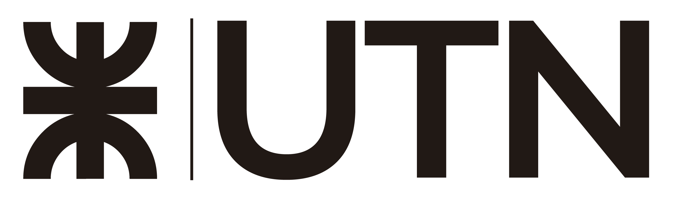

<!--Educación-->
<section id="educacion" class="educacion seccion-clara">
    <div class="container text-center">
        <h1 class="titulo-clara titulo-seccion">Educación</h1>
        <div class="row">

            <div class="columna col-xs-12 col-md-12 col-xl-4">
                <div class="container-icono">
                    
                </div>
                <h3 class="educacion-texto titulo-clara titulo">Universidad Tecnologica
                    Nacional<br>Tecnico
                    Universitario en
                    Programación</h3>
                <p class="sub-titulo-clara texto">Esta carrera me ofrecio conocimientos y prácticas
                    intensivas que me
                    permitieron analizar un problema de procesamiento de datos y desarrollar una
                    solución en un
                    lenguaje apropiado
                    utilizando un computador.
                </p>
            </div>

            <hr>

            <div class="columna col-xs-12 col-md-12 col-xl-4">
                <div class="container-icono">
                    
                </div>
                <h3 class="educacion-texto titulo-clara titulo">Argentina Programa - 1ra Etapa
                    <br>#SeProgramar
                </h3>
                <p class="aprendizaje sub-titulo-clara texto">
                    <span class="span">En esta primera etapa aprendi sobre: </span><br>
                    &lowast;<span> Gobstone:</span> para fundamentos de programacion.<br>
                    &lowast;<span> Javascript:</span> para programacion imperactiva e estructuras de datos.<br>
                    &lowast;<span> Ruby:</span> para el paradigma de objetos.
                </p>
            </div>

            <hr>

            <div class="columna col-xs-12 col-md-12 col-xl-4">
                <div class="container-icono">
                    
                </div>
                <h3 class="educacion-texto titulo-clara titulo">Argentina Programa - 2da Etapa
                    <br>YoProgramo
                </h3>
                <p class="aprendizaje sub-titulo-clara texto">
                    <span class="span">En esta etapa aprendi sobre: </span> <br>
                    &lowast; Las herramientas de un dev FrontEnd.<br>
                    &lowast; Las herramientas de un dev BackEnd.<br>
                    &lowast; Conocimiento en DevOps y Testing .<br>
                    &lowast; Metodologías ágiles, gestión de proyectos y Github.<br>
                </p>
            </div>

            <hr>

        </div>
    </div>
</section>